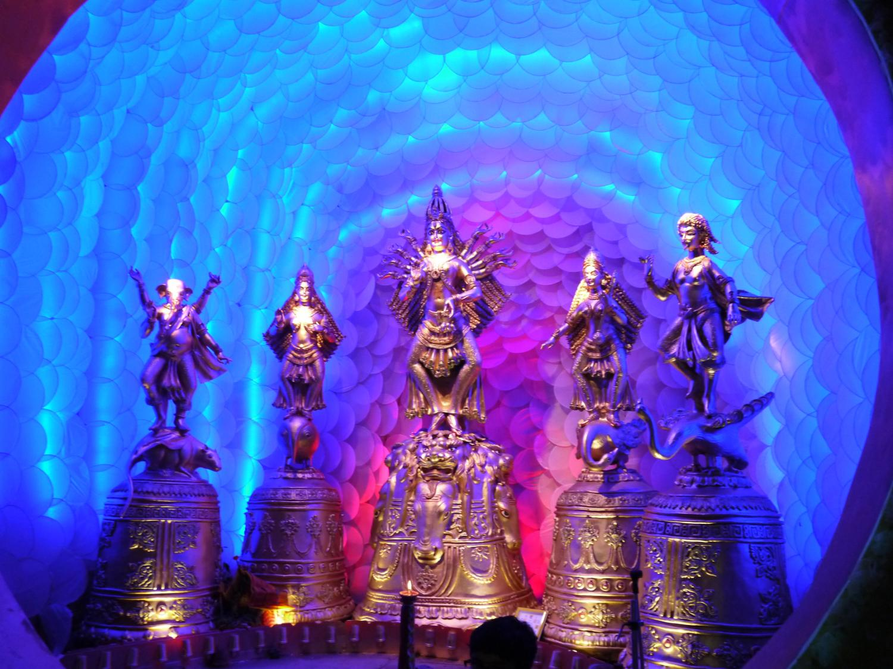
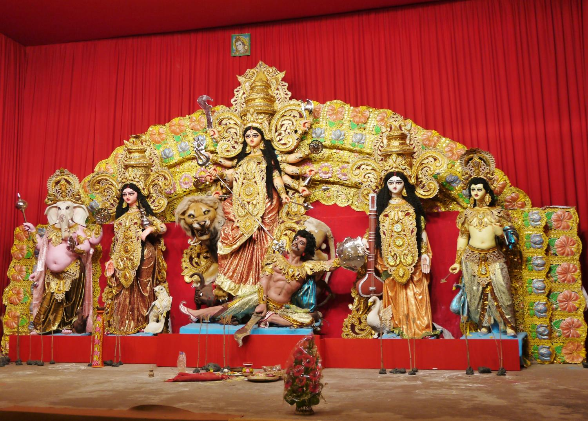
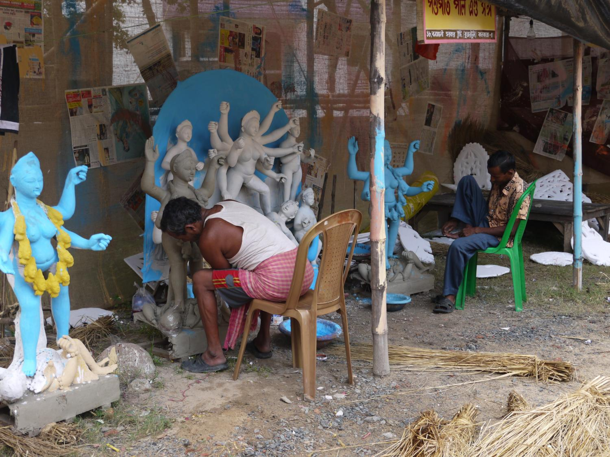
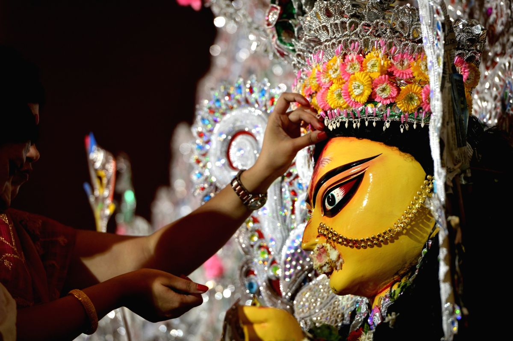
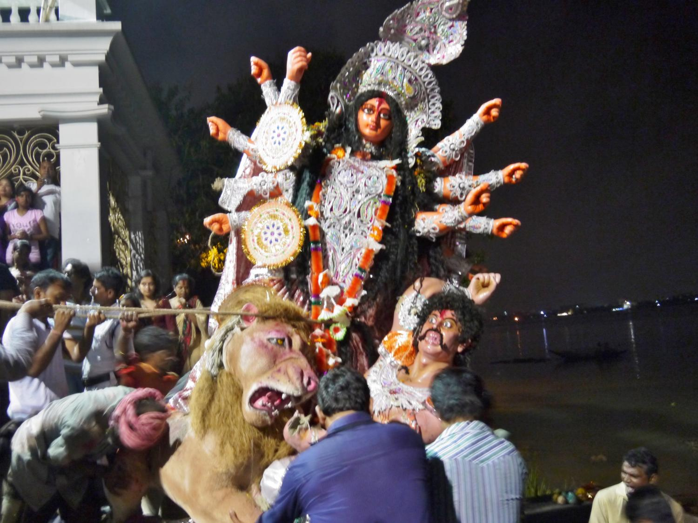

Indians work hard- typically six days a week, so when the festival season arrives, everyone is ready to don new clothes and celebrate. The Durga Puja festival marks the victory of Goddess Durga over the mythological demon Mahishasura, and is observed in the autumn months of September/October according to the Hindu solar calendar. It is the most important Bengali festival, and nowhere is it celebrated on a grander scale than in Kolkata.
Most of the city shuts down for the last four days of the festival, named Saptami, Ashtami, Navami and Dashami. Elaborate pandals are installed throughout the city to welcome Mother Durga. The word pandal means a temporary structure, made of bamboo and cloth, which is used as a temple for the purpose of the puja. Pandal-hopping is an annual tradition where locals and tourists visit the city’s displays, many of which are enormous and intricate works of art. Lights also play a key role in the festival, and as such, most of the celebrating is done in the evening, often lasting through the night. Traffic comes to a standstill, trains are overflowing and the streets are packed with people.
The pandal scenes depict Durga in her triumphant pose over the demon, wielding weapons in each of her 10 arms. She is flanked by her four children: Ganesh, Lakshmi, Saraswati and Kartikeya. Many of these magnificent works of art have a year of planning behind them.
All of the idols are made of clay, which is typically taken from the banks of the Ganges river. They are sculpted and then delicately painted. At the end of the festival, the statues are returned to the Ganges in a ceremonial immersion that represents Durga’s return to her husband, Shiva. There has been an environmental concern about this practice in recent years, as the paint and adornments pollute the river. Efforts are being made to use non-toxic paint, although it is not yet wide-spread.
Initially the festival was organized by wealthy families who passed the tradition down over generations, but the burgeoning middle class started to create their own community Pujas through local collections and fundraising. Today many are sponsored by corporations, and large ads, displayed exclusively during Durga Puja, can be seen throughout Kolkata.
During Dashami, the final day of the festival, women (particularly married women) bid farewell to Mother Durga in a ritual called Baran. As part of this ritual, the women feed sweets to the idols to wish them happiness and good fortune. The hope is that Durga will have a safe journey back to Lord Shiva and return to see her children again next year. The women also put sindur (red powder) on the foreheads of the goddesses, and then on other women, so they will be married for their entire lives like Durga. This ritual has expanded so that sindur is rubbed on the cheeks of married and unmarried women in celebration.
On the last night, processions move through Kolkata streets as the pandals are dismantled and idols are transported to the river. Drummers lead the way, followed by long lines of revelers and trucks carrying the statues. Festival-goers flood the streets to witness the journey, some walking to the ghats for the final immersion. This year in Kolkata alone, statues from more than 2,700 displays met their watery end at the banks of Ganges. Some have even compared Durga Puja to Rio’s Carnival. I’ve never been to Carnival, but it was quite an amazing spectacle, and I was fortunate to be in Kolkata during their most festive season.
